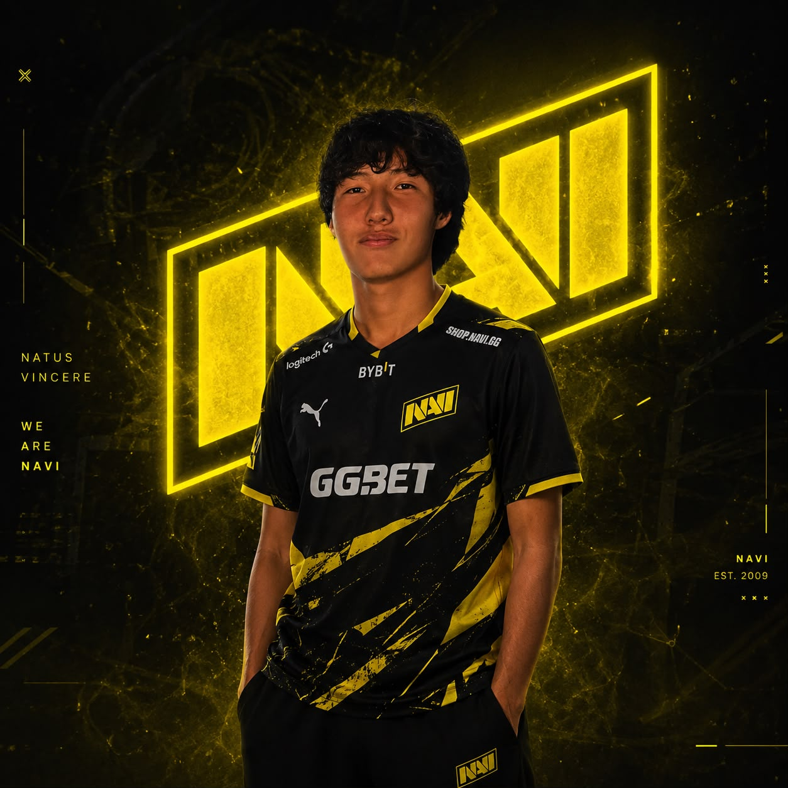
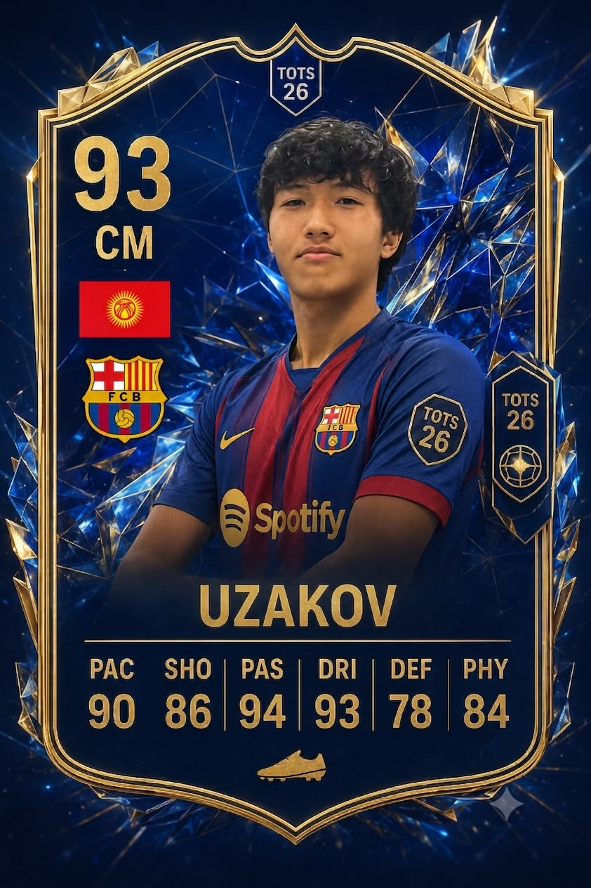
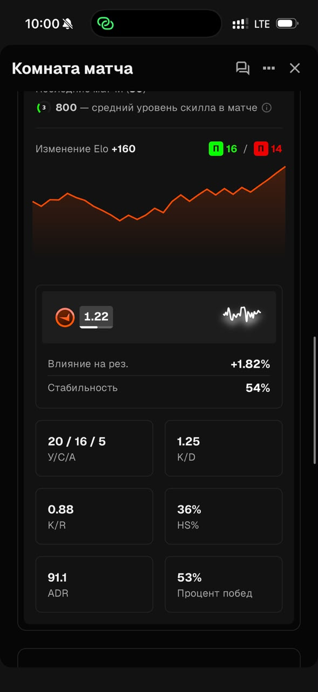

Обо мне
Меня зовут Эрик Узаков. Я студент первого курса IT & Business College Ala-Too. Учусь по специальности «Компьютерные системы и комплексы».

Мое фото
Я интересуюсь компьютерами, программированием, футболом и компьютерными играми.
Образование
До поступления в колледж я учился в СОШ №29 города Бишкек. Сейчас получаю образование в колледже АЛА-ТОО
Хобби и увлечения
Одно из моих главных увлечений — футбол. Я играю на позиции полузащитника.

Также мне нравится программирование. Сейчас я изучаю HTML, Python и Java.
Ещё я люблю компьютерные игры, особенно кс2.
Мои навыки
Hard skills:
- Основы HTML;
- Базовые знания Python;
- Базовые знания Java;
- Работа с компьютером;
- Базовые навыки монтажа.
Soft skills:
- Работа в команде;
- Ответственность;
- Дисциплинированность;
- Коммуникабельность;
- Стрессоустойчивость.
Мои результаты в CS2
Я хорошо играю в Counter-Strike 2 и регулярно играю в фейсит. Мне нравится развиваться в игре и улучшать свои результаты.
среднее статистика за 30 матчей

Моя статистика в CS2